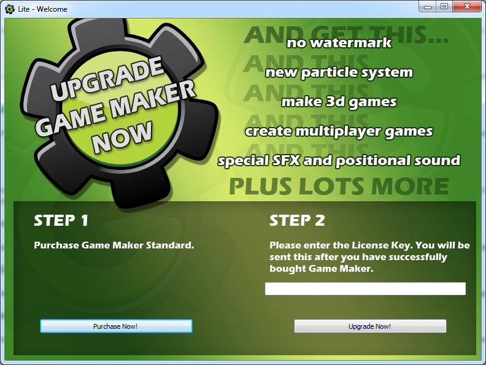
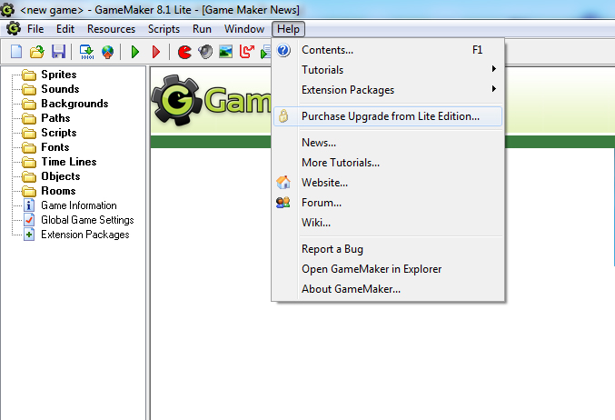

The Lite Edition is meant for those that take their first steps on the path of developing games. It can be used for free but is limited in its functionality. Also it shows a popup logo when running games and will regularly remind you of upgrading the program. When you are using Game Maker regularly you are strongly recommended to upgrade from the Lite Edition.
Standard Edition contains considerably more functionality and does not display any logos or popup messages. More precisely, Standard Edition has the following additional functionality:
Upgrading from Lite Edition costs only $39.99 (subject to change). This is a one-time fee that will be valid for all versions 8.x of Game Maker.
When you are running the Lite Edition, you can upgrade to
Standard by using the welcoming screen when you open Game
Maker.
To upgrade from the e Welcome screen, simply click the Purchase
Now! button, then proceed through the purchase process. Once
you have completed purchase, you will be shown your new license
which you can copy and paste into the text box in Step 2, and click
the Upgrade Now! button. Game Maker will then upgrade to the
full Standard Edition.
The license file will also be emailed to you using the email
address you type in during purchase, and if you've logged into YoYo
Games store, it will also be tied to that account, allowing you to
retrieve it at any time. If you don't login, the email will also
contain details of a new account setup using the email address you
provided. This will again let you retrieve your Game Maker License
code.
Please make sure you save the email, and the code itself, as you
will need it anytime you want to reinstall Game Maker.

You caYou can bring this dialog up again by selecting the Purchase Upgrade from Lite Edition... menu item, as shown below.

If you purchased Game Maker before (and hence, have an license key), you can go to the Help menu, and pick Enter License Key. Once you have entered a valid, your copy of Game Maker will be upgraded. You must be connected to the internet for the upgrade to work.
While Game Maker itself does not require an internet connection, it will require occasional access to maintain the license. If you can not connect your computer to the internet, you can download the license check file from YoYo Games website, and point the auto update system to it. if you fail to provide a valid file, or an internet connection when requested, your copy of Game Maker will be downgraded to Lite until such time as you do.
| Converted from CHM to HTML with chm2web Pro 2.85 (unicode) |